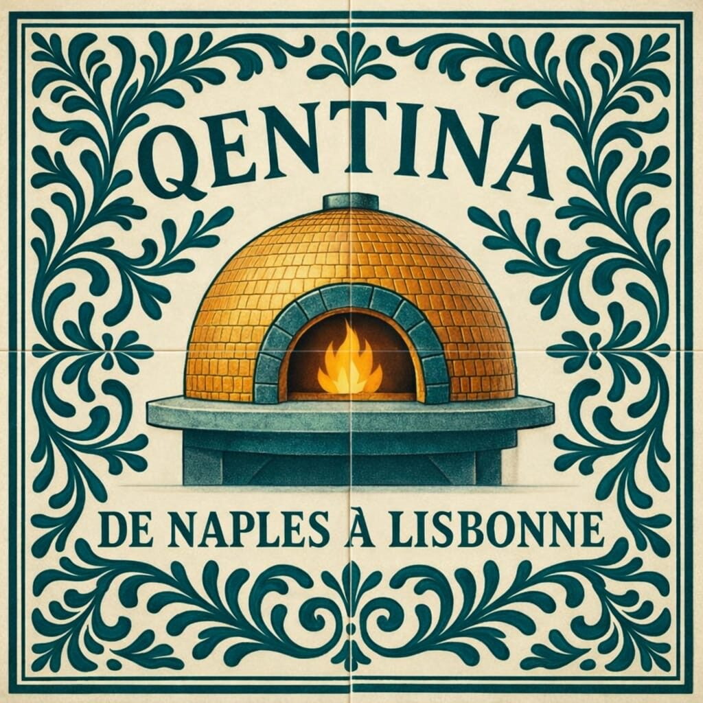
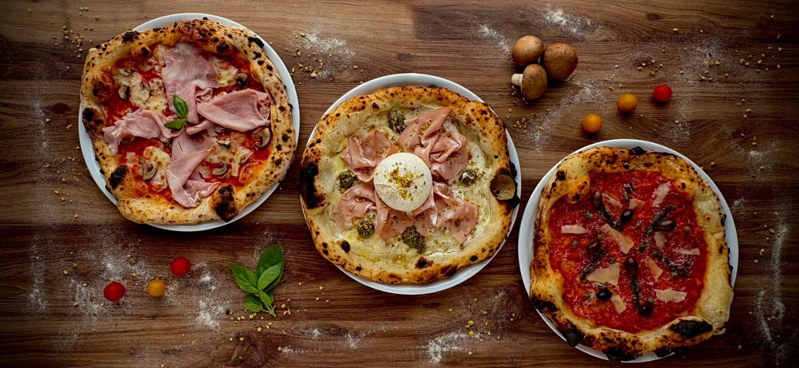

Pizzas napolitaines
Margherita, Burratina, Diavola, Pistacchio… nos pizzas au feu de bois, à partir de 11 €.


Pizzeria · Louviers (27400)
Au cœur de Louviers, QENTINA vous régale de pizzas napolitaines cuites au feu de bois, de panuozzo et de salades aux légumes grillés. Sur place, à emporter ou en livraison — et en terrasse au bord de l'Eure.
La maison
Installée au 20 rue Maréchal Foch, à Louviers, la pizzeria QENTINA a une signature bien à elle : tout est cuit au feu de bois. C'est notre unique four — pizzas, panuozzo et même les légumes y sont grillés, pour un goût unique et une cuisine plus saine.
Notre pâte est travaillée selon une approche napolitaine contemporaine, avec une longue maturation qui la rend légère, aérienne et digeste. Associée à des produits d'exception — farine italienne, mozzarella fior di latte, tomates San Marzano — elle donne des pizzas croustillantes dehors, moelleuses dedans.
Et pour profiter pleinement de l'instant, installez-vous sur notre terrasse au bord de l'Eure, l'un des plus jolis coins de Louviers pour déjeuner ou dîner au fil de l'eau.
Nos spécialités
Margherita, Burratina, Diavola, Pistacchio… nos pizzas au feu de bois, à partir de 11 €.
Le fameux sandwich napolitain doré au four, garni de produits frais — le midi.
Des salades généreuses et des légumes grillés au feu de bois, fraîcheur garantie.
Sur place · à emporter · en livraison
Envie d'une bonne pizza chez vous ? QENTINA propose la vente à emporter et la livraison à Louviers et dans les communes voisines — notamment Val-de-Reuil, Le Vaudreuil, Incarville, Pinterville, Acquigny et Saint-Pierre-du-Vauvray.
Pour commander ou réserver une table, appelez-nous au 02 59 16 20 93 ou utilisez notre formulaire de réservation en ligne.
Nous trouver
20 rue Maréchal Foch
27400 Louviers
Terrasse au bord de l'Eure
Mar – Sam : 12h00 – 14h30
19h00 – 22h30
Ven & Sam soir jusqu'à 23h00
Fermé dimanche & lundi
02 59 16 20 93
Commandes & réservations